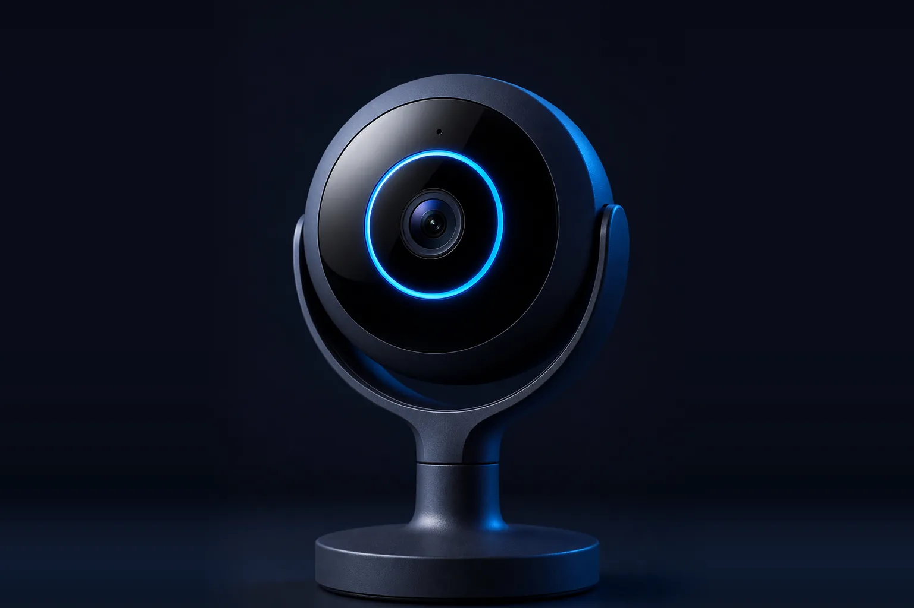

Ошейник
Активность, сон и температура питомца — каждый день.
Что отслеживает
- Активность и нагрузку в течение дня
- Качество и продолжительность сна
- Температуру тела
Ошейник, камера и имплант Animo работают вместе — отслеживают здоровье, активность и поведение питомца в реальном времени.
Узнайте, что чувствует питомец, до того как появятся симптомы.
Устройство следит за состоянием питомца 24/7.
Активность, сон и температура питомца — каждый день.

Поведение, тревожность, питание и взаимодействие.

Физиологические показатели и долгосрочные изменения.
Изменения, которые легко пропустить в повседневной жизни.
Питомец стал меньше двигаться или быстрее устаёт.
Поза, походка и поведение указывают на дискомфорт.
Беспокойство, когда питомец остаётся один.
Сон становится беспокойным или прерывистым.
Ранние отклонения показателей до появления симптомов.
Изменения в питании, ритме дня и поведении.
Одна система решает разные задачи — от дома до клиники.
Здоровье, безопасность и контроль активности любимца каждый день.
Наблюдение за группой животных и репродуктивный мониторинг.
Дистанционный мониторинг пациентов между приёмами.
Сбор поведенческих данных для научных и продуктовых задач.
Animo непрерывно строит модель организма и отслеживает изменения до появления симптомов.
Отдельные цифры — это полдела. Animo объясняет, что они значат.
Дорогой и измеряет показатели только в покое.
Измеряет показатели только в покое.
Активность и GPS, но без пульса и дыхания.
Непрерывные показатели + поведение + AI-объяснение по доступной цене.
Расскажем о продукте, покажем презентацию и обсудим, как Animo подойдёт вашей задаче.
Запросить контакты и презентацию